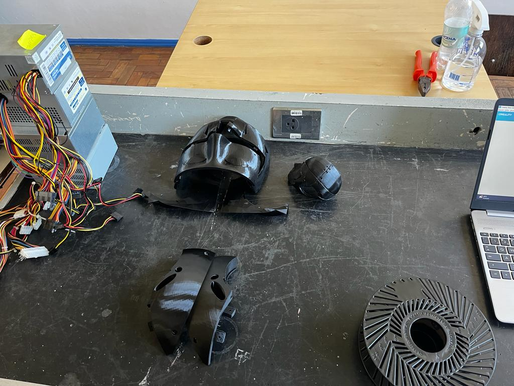
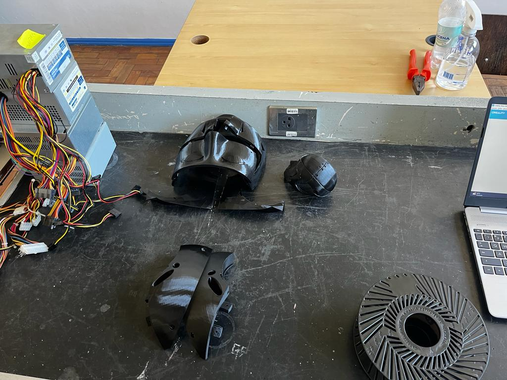

Sobre o robô
Lançamento do projeto:

Na data de 09/08/2023 os alunos da informática da tarde, Escola Ulbra São Lucas, começaram com um projeto de aprimoramento do Robô White que por meio de votação foi decidido renomear de EchoBot.
Os alunos foram separados em grupos para a construção do EchoBot, onde existe a mídia, designer, criação do site e o desenvolvimento da cabeça.


Foram separados em grupos que ficaram responsáveis por fazer o brasão do robô, adesivos, pintura e logo, após os alunos terminarem a criação das logos, eles decidiram fazer uma votação para decidir qual a melhor. A escolhida foi a terceira opção.
Na data de 11/10/2023 Foi criado o e-mail do EchoBot

Esses foram os primeiros esboços de cabeça do EchoBot feitos no dia 9\10\2023.
Esses foram os prototipos da cabeça do EchoBot que entraram em votação para decidir qual seria a melhor cabeça para o robô. O prototipo vencedor foi o número 2, que logo após da votação começou a ser feito na impressora 3D.
 

Então dia 23/10/2023 a 27/10/2023 foi finalmente impresso a cabeça do EchoBot. Esssa foi a impressora usada para imprimir a cabeça do EchoBot, ao lado esta a cabeça do robô pronta.

No dia 18/10/2023 começaram a desenvolver ombreiras de papelão para o EchoBot

No 23/10/2023 os alunos fizeram um upgrade na articulação do EchoBot. O pessoal está procurando, desenvolvendo e desenhando a parte do ombro do robô para melhorar sua movimentação que antes era por correias.
Imagens tirada no dia 27/10/2023 dos alunos criando as ombreiras do EchoBot.
No dia 25/10/2023 foi iniciada a pintura da carcaça do robô na cor metálica.